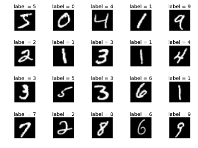

learning_rate
# Minimize error using cross entropy
learning_rate = 0.001
cost = tf.reduce_mean(-tf.reduce_sum(Y * tf.log(hypothesis), reduction_indices=1)) # Cross entropy
optimizer = tf.train.GradientDescentOptimizer(learning_rate).minimize(cost) # Gradient Descent일전에 학습할 때는 learning_rate를 임의의 값으로 주고 학습을 하였습니다.
만약에 learning_rate를 굉장히 큰 값이나 작은 값으로 준다고 생각해봅시다.
Large learning rate : overshooting
learning rate가 큰 경우 step마다 이동 폭이 넓어서 어느 순간 곡선 밖으로 팅겨나갈 수 있다. cost함수 값에서 숫자가 아닌 값이 나온다면 overshooting이 일어났다고 볼 수 있다.
Small learning rate : takes too long, stops at local minimum
이러한 local minimum으로 train이 끝나는 현상을 방지 하기 위해서는 cost함수를 출력해보고 값의 변화가 적을 때는 learning_rate를 올리면 된다.
Try several learning rates
- Observe the cost function
- Check it goes down in a reasonable rate
초기에 0.01로 시작하여 cost함수의 값을 관찰하면 좋다.
Data(X) preprocessing for gradient descent
2-Dimensional weight의 경우를 생각해보면 아래와 같이 cost 함수 값을 나타낼 수 있다.
출처 : https://bishnu.synology.me/wordpress/2014/12/16/cost-function-ii/
input과 output이 다음과 같은 경우의 모델을 예로 들어보자.
x1이 w1, x2가 w2와 곱해져서 합해진 값이 hypothesis가 되기 때문에, x1에 곱해지는 w1값의 spectrum이 w2에 비해 상당히 넓게 나타나게 된다.

alpha값(learning_rate)이 잘 잡혀도 w1의 길이가 w2에 비해 상대적으로 너무 길어서 overshooting의 가능성이 충분히 있다.
zero-centered data / normalized data

learning rate를 적당히 잘 잡았음에도 불구하고 overshooting이 일어나거나 cost값이 잘 떨어지지 않는 경우 preprocessor를 잘 적용하였는지 점검 해야한다.
보통 input data간의 격차가 큰 경우 해당하므로 preprocessor를 이용하여 data normalization을 해야한다.
Standardization - normalization의 한 예
where μ = 평균, σ = 분산
python에서는 단 한줄의 코드로 마무리된다.
X_std[:,0] = (X[:,0] - X[:,0].mean()) / X[:,0].std()이 외에도 다양한 normalization이 있는데 여러가지를 찾아보고 적용해보는 것도 좋을거 같다.
Overfitting
- Our model is very good with training data set(with memorization)
- Not good at test dataset or in real use

model 1의 경우가 일반적인 model이고 잘 판별할 수 있다.
model 2의 경우는 overfitting이 일어난 경우라 볼 수 있다.
Solutions for overfitting
- More training data !
- Reduce the number of features
- Regularization
Regularization
-
Let's not have too big numbers in the weight
구부러진 경계 선을 펴!
where λ = regularization strength
λ값이 커질 수록 regularization의 중요도를 높게 평가한다는 것이다.
in tensorflow
l2reg = 0.001 * tf.reduce_sum(tf.sum(tf.square(W))Training, validation and test sets
Online learning
기존의 데이터에 대한 학습을 기억한채 새로운 학습을 할 수 있는 모델
MNIST Data set
 train-images-idx3-ubyte.gz : training set images (9912422 bytes)
train-labels-idx1-ubyte.gz : training set labels (28881 bytes)
t10k-images-idx3-ubyte.gz : test set images (1648877 bytes)
t10k-labels-idx1-ubyte.gz : test set labels (4542 bytes)
출처 : http://yann.lecun.com/exdb/mnist/
위의 Training set Testing set 구조처럼 MNIST도 나눠져있는 것을 확인할 수 있다.